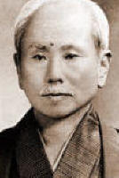
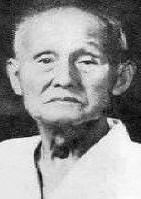

New to Karate
If you are new to karate we hope this section can go some way to answering any questions or concerns you may have before you or your child starts training in Karate with the Jewel Karate Club. If you still have any questions after reading this section you can email JewelKarate@Hotmail.co.uk with any questions, we will be happy to help with any questions
Senior Instructor
Alex Rorrison is the Jewel Karate Group Senior Instructor has been studying karate since his early teens and has been awarded the grade of 5th Dan (Black Belt) by the Scottish Karate Federation.

Sensei(Teacher) Alex Rorrison has trained and competed in regional, national and international levels of karate thoughtout his competitive life, In the competitive arena he has held coaching and refereeing positions and has competed for Scotland and Great Britain in events.
What is Karate
Karate is a form martial arts which originated on the island of Okinawa in Japan. The martial art was a means of self defence without the use of weapons. The origins of karate are various in Asian martial arts however the base is prominently Chinese. The word 'KARATE' is formed was originaly called Tote-do from the chinese, when the martial art was shown in the main land of Japan the name was changed to Karate-do more acceptible Japanese words
| Chinese name for Karate | Japanese name for Karate | |
| To-Te |  |
Kara-Te |
| To - China | Kara - Empty | |
| Te - Hand | Te - Hand |
This shows that its practitioners a Karate-Ka (student) are not armed and use defence and counter with the use of empty hands, however it is seen as they use their hands and feet as striking weapons. There are many different styles of Karate. But the most successful and commonly practised style throughout the world is a blend of karate called Wado Ryu.
Wado Karate-Do
Wado Ryu karate is principal a blend of karate and Jujutsu. A style of karate known as Okinawan Shotokan Karate as taught by sensei Gichin Funakoshi and a form of Jujutsu known as Shinto Yoshin Ryu Jujutsu have been adapted and blended by the Wado-Ryu founder sensei Hironori Ohtsuka who was the fourth Grand Master of Shinto Yoshin Ryu Jujutsu.
| Gichin Funakoshi | Hironori Ohtsuka |
|  |  |
| Shotokan Karate-Do | Wado-Ryu Karate-Do |
It is a style of Karate which emphasises a balanced development of speed, strength and range of techniques, taught within a system which instils confidence and self-control. The Wado Style was originated by Hironori Ohtsuka, and officially began in May 1934 when it was registered and was recognized as an independent style.
The translation of Wado Ryu from Japanese into English is not exact due to the indifference within both the languages. A translation may be seen as.
  |
Wa - do - Ryu - Kara - te - Do - Wado Ryu - Karate Do - |
Softness, Peace, Harmony, too Calm, too Harmonize & to Add
the Way the Style Empty Hand the Way The way of peace and harmony The way of the empty hand |
What do I wear?
Loose casual clothing such as tee-shirt and jogging bottoms will be perfectly adequate for your first few weeks of training. After which a karate suit is available through the club if you wish. Training is always done bare foot.
Why should I train in karate?
Karate is a formidable method of self defence. In training one will gain a good level of personal fitness, increased confidence and discipline. Karate is suitable to all people of any sex, build or age. Once the basic principles have been learnt they will stay with you for the rest of your life.
Is it expensive?
No. Compared to other sports karate is good value. Training costs only £4.00 a lesson. There is no club membership fee. and karate suit doesn't need to be purchased until you are sure that karate is for you. The only other initial cost is a licence which provides personal accident insurance cover and cost £15 for Children and £20 for Adults.
What are the injury risks for Karate?
The injury risk in Karate is lower than in most other sports. All contact is controlled and the most you would expect is the occasional lump or bruise. Our classes are meant to teach Karate - thus Gung-Ho bone breakers and street thugs are not welcome, and you wont find them in our classes. Broken bones and noses as well as knee and joint injuries common with most popular sports are in fact very uncommon in Wado Kia Karate.
It is the responsibility of the instructor to ensure a safe environment for his students. We as a club are proud to state that in the years that we have been running and the countless numbers of students who have and are being taught karate. We have had no serious injuries to our students.
Do I have to learn Japanese to practice karate?
No, not as a full language, however a number of terms and names of the movements are in Japanese, but the introduction to the terms and names in Japanese will be a made in a gradual process that will come easily to any person of any age. In some karate dojo's (sports Hall) and clubs the use of all Japanese terms can be taken to the maximum. However you will find that most karate clubs use English along side Japanese terms.
Can any one practice karate?
Karate can be practiced by men, women and children. Anyone who is in reasonable health can train at karate. Whilst a student of karate-do you will improve your self-awareness, self-confidence and self-esteem. Our clubs have a junior and senior classes which enables students to train in an environment geared to their needs and set to their level. (Anyone with health problems should consult their doctor first then approach the senior instructors about their training.)
What will the training involve?
Most people joining any of our clubs are beginners and there is a wide range of grades held by our students in the club from beginners to National and International competitors. When classes begin we normally hold to a structured set of techniques. Your training will be set into sections.
| Stretching | to assist in easing the muscles and toning the body |
| Kihon Waza | a basic set of techniques of kicks and punches |
| Renraku Waza | a combination of basic techniques |
| Gumite | prearranged and set sparring |
| Kata | set of formed combinations to create a 'dance' |
| Kumite | free sparring (contact is dependant on level of grade) |
| Stretching | assist in easing the mussels and warm down the body |
| Fitness | an aid to a physical exercise program |
Each section has a range of complexity to suit the different levels or grades of students. Kumite will be introduced to you as basic blocking and counter-attacking, but will ultimately lead you to free-style fighting, where you will be taught to attack with, and defend against, unannounced attacks
Will I be able to take part in competitions?
Karate is an exciting and challenging sport. Club members are actively encouraged to compete if they wish to do so. We participate in many competitions throughout the year at various levels. There are club and regional events for all ages and grades, with opportunities for selection to the national squads.
| JKG Inter Club Events | Federation Competitions |
| Individual Club Open Championships | SKF - SKGB Championships |
What are the benefits of practising karate?
| promotes respect disciplines the mind and body removes stress and anger develops concentration attend competition as a club and as an individual |
self defence promotes self-confidence builds confident character meeting good friends personal fitness will promote overall good health |
Is karate violent?
There is a 'Dojo Kun', or training code, which not only ensures the highest level of disciplined within our training environment, but serves as a tool for moulding behaviour, so that a true Karate-ka (student of karate) will only employ physical violence as a last resort, with obvious benefits to society.
When do I get my first belt?
Belts are the show of grade in karate. Your first belt could be attained in only 3 months after completing a Kyu grading, then depending on age if you are a
|
Junior
4 years to 11 years Coloured Belts System Junior Grading System White Belt Junior Yellow Belt Junior Orange Belt Junior Green Belt Junior Blue Belt Junior Purple Belt Junior Brown Belt |


|
Grading System Mon Grade Mon Grade Mon Grade Mon Grade Mon Grade Mon Grade |
|
|
Cadet
12 years to 17 years Brown Tag System Senior Grading System White or Junior Brown Belt Brown Belt - Yellow Tag Brown Belt - Orange Tag Brown Belt - Green Tag Brown Belt - Blue Tag Brown Belt - Purple Tag Brown Belt - 1st Red Tag Brown Belt - 2nd Red Tag Brown Belt - Black Tag SKF DAN Grade Black Belt Black Belt Black Belt |


|
Adult
18+ years Coloured Belt System Senior Grading System White Belt Yellow Belt Orange Belt Green Belt Blue Belt Purple Belt Brown Belt Brown Belt Brown Belt SKF DAN Grade Black Belt Black Belt Black Belt |
Grading System
8th Kyu 7th Kyu 6th Kyu 5th Kyu 4th Kyu 3rd Kyu 2nd Kyu 1st Kyu Grading System 1st Dan 2nd Dan 3rd Dan |
How long will it take to achieve my black belt?
Black belts or 1st Dan. May be obtained in as little time as three or four years of continuous intense training. The time will include the student completing all the Kyu grades (grading) from 8th Kyu until 1st Kyu